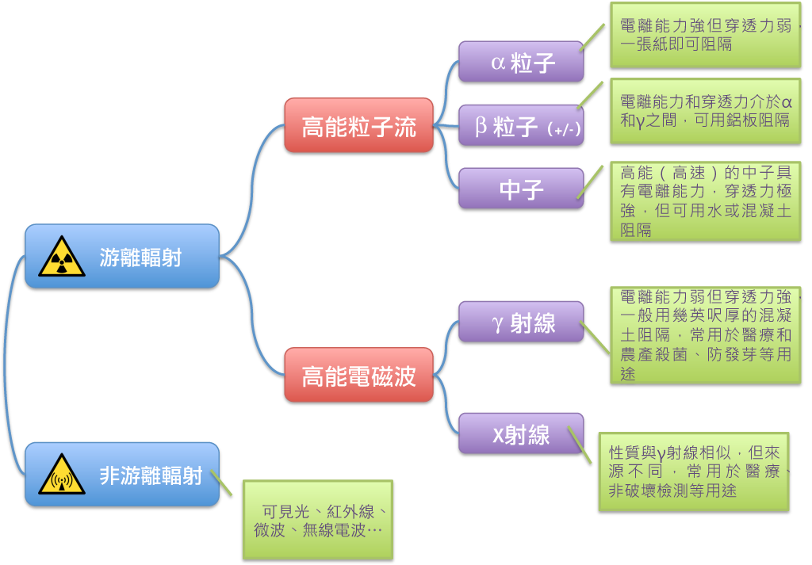
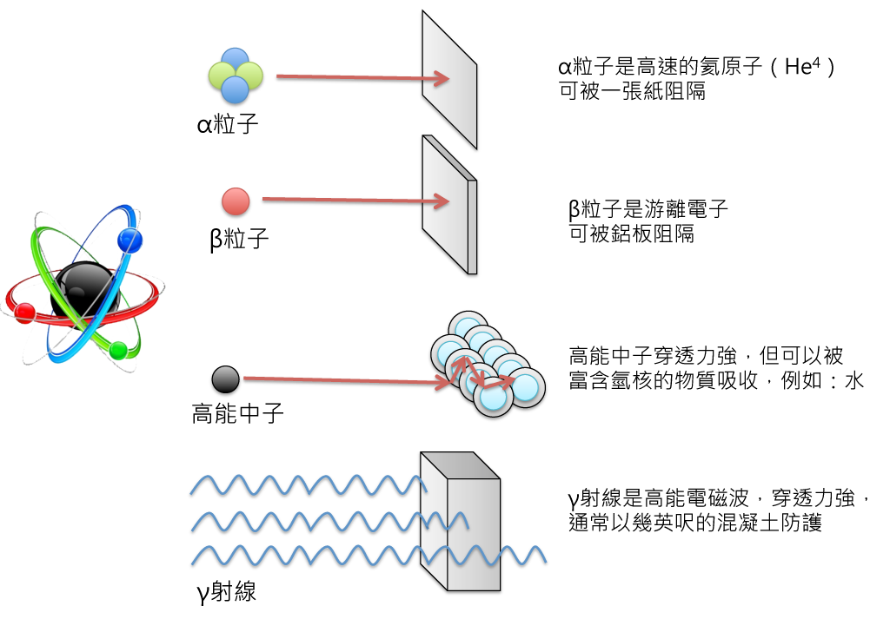

輻射ABC
輻射是自然的物理現象，人類自古即與輻射共存至今，然而今天卻有很多人聞輻射而色變，到底輻射真的那麼危險？還是我們對輻射認知不足？讓我們一起來瞭解輻射。
輻射的種類
輻射是一種能量傳遞的方式，其中主要的種類包含可見光、紅外線、紫外線、α粒子、β粒子、高能中子、γ射線、X射線...等等，各種輻射的電離能力、穿透性與應用層面各不相同
輻射是一種能量傳遞的方式，也就是把能量往四面八方發射。輻射可以粗分為「非游離輻射」與「游離輻射」兩種，其中非游離輻射能量較低，其種類包含可見光、紅外線、微波、無線電波...等等，雖然照射大量的紫外線或電磁波可能對人體產生傷害，但一般不將晒傷之類的傷害歸類於輻射傷害，因此本文不討論非游離輻射的範疇。
能量較高的輻射是游離輻射，因為可以將原子游離成電子與陽離子，故名得此名。游離輻射又可區分為高能粒子流與高能電磁波，其中高能粒子流包含α粒子、β粒子(+/-)與中子，高能電磁波包含γ射線、X射線與特定波長的紫外線。每一種粒子或射線的電離能力與穿透性均不同，例如α粒子的電離能力很強，但穿透力非常弱，只要一張紙就能阻隔；γ射線的特性就恰與α粒子相反，他的穿透能力非常強，需要幾英呎厚的混凝土才能降低γ射線，但是γ射線的電離能力卻很弱，對生物的影響相對較小。我們可以用下圖來說明各種輻射的差異。


輻射的來源與應用
不論輻射的來源是天然的還是人造的，對生物的影響不會有所不同
游離輻射依來源可分成兩類型：自然的與人造的。然而不管是自然的或人造的，其輻射都來自於衰變過成所產生的各種粒子與射線，其對於生物的影響不會因為來源是自然的或人造的而有所不同，因此輻射絕對不是「天然ㄟ尚好」。下表列出各種不同來源的輻射，以及其來源與應用。
| 分類 | 放射性物質 | 來源與應用 | ||
|---|---|---|---|---|
| 自然來源 | 鉀(K)40、碳(C)14 | 香蕉、馬鈴薯、魚、人類 | ||
| 自然來源 | 放射性礦物鈾(U)、鐳(Ra)與釷(Th) 等與氡氣(Rn) | 煤炭（含鈾）、天然水如溫泉（含鐳）、水泥（含氡） | ||
| 自然來源 | 電子e- 、 緲子μ±、碳-14、中子、質子p+、氦核He2+、其他重核子、γ射線 | 各種宇宙射線 * |
||
| 人工來源 | X射線、鈷-60、正子、γ射線、質子、重離子、碘-131、鍶-89、釤-153、碘-123、碘-125、鎝-99、鉈-201、鎵-67、氟-18、碳-11、氧-15 | 放射醫療 X光攝影與斷層掃描（CT）、癌症正子治療、質子或重離子治療術、體內造影術用的放射性示蹤劑、正電子發射斷層成像術（PET） |
||
| 人工來源 | γ射線 | 醫療手術、農產品殺菌、防發芽、基因改造 | ||
| 人工來源 | 鋂-241、鐳-226、β射線、 | 民生應用：煙霧偵測器、自發光的夜光材料、傳統CRT電視 | ||
| 人工來源 | 鈾（U）、釙（Po） | 用於核能發電、核武 | ||
| 人工來源 | 銫（Cs）、鈽（Pu）、鈷（Co） | 核裂變產物，可能來自於核能意外 | ||
| * 地球的大氣層與磁場提供了很多保護，減少了許多宇宙射線 | ||||
輻射對人的影響
輻射傷害同時受到閾值和機率的影響，低於閾值的暴露不必然產生傷害
游離輻射進入人體後，會有各種不同的影響。可能造成發熱、化學變化、或組織傷害；熱雖然是物理性變化，但大量的熱輻射可能造成輻射灼傷。短期大量的輻射性灼傷，不易治療，甚至會因感染而死亡；但是這種狀況只有在核彈爆炸、或嚴重的核能災難或意外才會發生。平常的自然輻射，人體組織已經適應能修補恢復正常。
游離作用也可能產生化學變化，分子被活化成離子(自由基)，可能與其他物質重組成新化合物，改變了化學特性。另外極少部分高能量的粒子或中子可以產生核反應，例如將氮轉變為碳。這些化學變化可能破壞細胞組織或者DNA。當DNA重組時，由於雙螺旋結構具有複製的功能，多數可恢復原狀；但有少數可能會產生變異，造成基因突變；，可能變成腫瘤；部分無法存活，細胞會死亡，組織會再補充新的細胞。
不同的放射性物質會透過不同的衰變過程產生輻射，例如鈾-238會衰變為釷-234並產生α粒子，碳-14則會衰變為氮-14並產生β粒子， 不同種類的粒子與射線又具備不同的穿透力與電離能力，因此要度量輻射對人體的影響時，要考量各種不同粒子與射線的特性。 另外，人體不同部位的細胞受到輻射照射後對健康的影響也不同，例如造血的脊髓與保護外表的皮膚受輻射照射後造成的影響就不同。為了滿足種種考量，一般常用「等效吸收劑量」(簡稱劑量)來表示輻射對人體健康的影響，目前國際間以西弗(Sievert, Sv)為等效吸收計量的單位，但因西弗單位太大，故習慣上常用毫西弗mSv = 10-3 Sv， 或微西弗μSv = 10-6 Sv來度量。
西弗(Sv)作為一種計量當量，可以用下列式子解釋：
| H = DQN | ||
| D 吸收劑量 | 輻射傳到人身上的能量 | |
| Q 品質因數 | 不同的粒子或射線有不同的品質因數，例如電離能力強的α粒子的Q=20，但電離能力弱的γ射線的Q=1 | |
| N 修正因數 | 不同的器官或生物有不同的修正因數，例如骨髓影響造血功能，其N = 0.12，但影響較小的皮膚N = 0.01 | |
輻射強度則是以每單位時間內人體組織所吸收的等效劑量表示，短期的輻射強度常用微西弗/小時 (μSv/h)表示，長期的輻射強度則常用毫西弗/年(mSv/y)表示。
輻射劑量則是一定範圍內隨時間累積的量，例如一年之內累積的量。
輻射對人體的影響可以分為「確定性效應」與「隨機性效應」兩大類。確定性效應指當輻射劑量大於閾值劑量時，輻射可對人體造人明確的損傷，如白內障、皮膚損傷、生育能力損害等，而且損傷的程度與輻射劑量成正比，輻射劑量越大，傷害就會越大。但是當輻射劑量小於閾值時，這類效應就無法察覺。例如輻射工作者眼睛受到輻射劑量在每年150 mSv以下時，輻射誘發的白內障在此人一輩子中都不會出現，但是超過每年150 mSv的閾值時，就會對水晶體出現傷害，且傷害隨劑量成正比，嚴重者會造成白內障。
隨機性效應則沒有閾值，發生損害的機率與輻射劑量成正比(線性無閾值)，但損害程度和輻射劑量無關。例如輻射引起的癌症的機率與輻射劑量成正比，但癌症的嚴重程度與輻射劑量無關。由於隨機性效應帶來的損害是隨機的，可能發生，也可能不發生，因此通常以流行病學的統計方法來進行研究。因此一個地區是否受到輻射影響而使癌症發生率增加，應該就流行病學的統計數據來看，不能單就個案下結論。
按： 線性無閾值理論仍存在爭議，但線性無閾值的假設較非線性來得保守，因此一般輻射防護仍以線性無閾值假設作為基礎，故此處為文仍採用線性無閾值理論，相關爭議可參見科學月刊社理事長林興基的著作 人類健康需要多嚴的輻射劑量規範？
對於一般人，法定的輻射劑量標準值是扣掉天然輻射與醫療輻射後每年1 mSv，這數字是以自然輻射的一半作為參考。對於與輻射相關的職業人員(核電廠員工、空中飛航人員、太空人等)，規定連續五年的總劑量不得超過100mSv，單一年的總劑量不得超過50 mSv，這是根據高輻射劑量的致癌率，推測30年累積劑量約增加0.5%的致癌可能性而規定。相對於臺灣人約有28%會染上癌症，由這些由輻射所增加的風險可謂微不足道。
下表中列出國際輻射防護委員會(ICRP)建議的個人劑量尺度與嚴重程度說明：
| 嚴重程度 | 每年輻射累積劑量(mSv) |
| 嚴重 | 30 ~ 300 |
| 高 | 3 ~ 30 |
| 中度 | 0.3 ~ 3 |
| 低 | 0.03 ~ 0.3 |
| 微不足道 | < 0.03 |
每年250 mSv以下的低劑量輻射對人的影響，目前仍無定論，有一派學者支持低劑量輻射可加速細胞的汰舊換新、提升免疫力、與降低癌症罹患率等，但另有一派學者持相反意見，並各自有所佐證。是以長期低劑量輻射的生理效應是好是壞，目前醫學界仍無定論，官方組織仍採用比較保守的態度，也不建議民眾自行採用號稱具有輻射激效功能的產品，先前在國外也有發生有具放射性的健康項鍊被要求回收的案例。
環境中的輻射
游離輻射幾乎無所不在，躲都躲不掉，與其擔心輻射暴露，不如了解生活中的輻射
在沒有特定核災意外的時候，全球平均每人每年所受的輻射劑量約為2.93 mSv，其中自然輻射約為2.4 mSv (82%)，人造輻射約為0.53 mSv (18%)。臺灣每人每年平均自然輻射劑量為2mSv(71%)，人造輻射0.82mSv(29%)。
自然輻射隨時都有、隨處都有，人類無法逃脫自然輻射，要求生活零輻射是無法做到的。臺灣的輻射來源主要有三個來源：
| 輻射來源 | 輻射物質/種類 |
| 水泥、地表、花崗岩、磁磚 | 氡、鈾、鐳、釷 |
| 宇宙射線 | 電子e- 、 緲子μ±、14C、中子、質子p+、氦核He2+、其他重核子、γ射線 |
| 富含鉀的食物（如香蕉、馬鈴薯）、人類 | 鉀-40 |
最主要的輻射來源是建築物與地表，建築物與地表釋皆會放的氡氣與其他放射性物質！美國人習慣住在有地下室的房屋，地下室容易累積地殼釋放出來的氡氣。而臺灣氡氣偏高則是因為建築物常用大量的礦物製品，如磁磚、鋼筋、水泥與石材，這些礦物製品都會累積氡氣。另外，臺灣還有一個世界第一名：平均每人的水泥使用量，富含礦物質的水泥免不了含有放射性礦物，其衰變產生的氡氣就會瀰漫在室內。所以，貼滿磁磚與花崗石的水泥建築，看起來富麗堂皇，但卻是製造氡氣的溫床，而氡氣正是肺癌的成因之一。多使用木製建材，就可以減少礦物產生的輻射。另外，煙草也含有輻射物質，吸煙會把輻射物質吸入肺中，不可不慎。
第二名輻射來源是人體內的鉀-40，因為天然的鉀就含有0.0118%的放射性鉀-40，而鉀與鈉是調節水分進出細胞的重要成份，身體不能沒有鉀。在富含鉀的食物，例如香蕉、馬鈴薯、魚以及乾燥水果（新鮮香蕉的6倍）中，都含有放射性的K40。
最後一項是宇宙線，這是唯一來自地球以外的輻射源。玉山上的宇宙輻射線強度約為平地的三倍左右，接近一年法定劑量的1 mSv，但學者發現世界上有數個天然輻射比平均值高4 - 5倍的地區，其癌症發生率或不孕率或死亡率卻比較低，因此可以確定玉山頂不會平地上更危險！
人造輻射以醫療用X光及核子醫學佔最大比率。美國人的平均醫療用輻射約為0.54 mSv/年，其他民生消費品、輻射落塵、核廢料與其他等約為0.12 mSv/年；合計人造輻射劑量約0.66 mSv/年，約佔美國人每年總劑量的18%。臺灣的人造輻射劑量卻高達0.82mSv/年，主要源自醫療診斷所造成的劑量就佔0.81 m S v/年，明顯高於國際平均值。一次胸部電腦斷層掃描的劑量高達7mSv，是七年的法定劑量，是一般胸部X光攝影的350倍！國人應該更審慎地使用這些醫療輻射，避免過度使用，造成輻射劑量過高並浪費醫療資源。
福島核電廠氫氣爆炸數次，媒體數度傳出輻射超標上千倍，引起大眾人心惶惶，但其實都是新聞記者的錯！正確說法是：爆炸時的最大輻射「強度」超過1000 mSv/年！看起來像是法定「劑量」每年1mSv的一千倍，但是爆炸持續的時間遠小於一年，真正的總劑量是輻射強度的累積，簡單的估算最大值1000mSv/年乘上爆發時間例如5分鐘，這只有0.01mSv，是一年法定劑量的1%而已。報導內容誤把強度當成劑量，可謂失之毫釐差之千里。即使以最大的爆炸，福島四號機在3/15 5:45 ~ 11:16的持續爆發期間，最大強度約為12 mSv/小時，估計總劑量最大值約是12 mSv/小時 × 5.5小時= 66 mSv，但由於並非全程都保持在最高劑量，所以實際測量的總劑量約只有40~50mSv。此劑量絕對不是超標千倍，也還在聯合國原子輻射效應科學委員會定義的低劑量範圍之內 ( < 100 mSv)。福島的輻射隨著離電廠越遠，輻射的劑量也快速下降，因此WHO評估福島居民沒有明顯健康上的疑慮，但持續每年的健康檢測還是有必要的。
下表列出生活常見的中各種輻射劑量以加強理解：
| 輻射劑量(mSv) | 說明 |
| 7,000 ~ 10,000 | 一次嚴重暴露，死亡 |
| 2000 | 一次鈷-60放射性治療 |
| 1147 | 巴西瓜拉帕里地區海邊的黑砂一年放出的劑量 |
| 1000 | 一次嚴重暴露，約有10%的人會噁心嘔吐 |
| 500 | 一次嚴重暴露，末稍血管淋巴球減少 |
| 260 | 伊朗Ramsar地區一年累積的背景輻射 |
| 200 | 低於此劑量的全身急性輻射被曝尚未有醫療證據指出明顯的症狀 |
| 10 | 福島撤退災民抽樣調查，最高暴露劑量 |
| 6.9 | 一次X光斷層掃瞄 |
| 5 | 福島撤退災民抽樣調查，98%的人所承受暴露劑量 |
| 2.82 | 全球年均的背景輻射劑量 |
| 2.82 | 臺灣年均的背景輻射劑量 |
| 1 | 法律規定承受的年輻射劑量容許值（排除醫療照射與背景輻射） |
| <1 | 福島撤退災民抽樣調查，2/3的人所承受暴露劑量 |
| 0.156 | 台北經安克拉治往紐約班機來回 |
| 0.05 | 一次胸部X光檢查 |
| 0.01 | 核電廠周遭一年的允許劑量 |
結語
輻射自宇宙創始之初即存在至今，太陽能發出光與熱也是核能反應發出的能量，以輻射的形式把能量傳至地球孕育生命；同時各種天然與人工的輻射源也存在於我們日常生活中。輻射也被廣泛應用在生活各層面從農業、醫學到工業與居家安全無處不在。輻射有其便利性，但高劑量輻射亦有其危險性。與其聽信各種奇怪的消息告訴各位應該不計一切手段遠離輻射，不如瞭解輻射、認識輻射，並學習如何與輻射共處，並透過輻射的優點改善人類的生活。